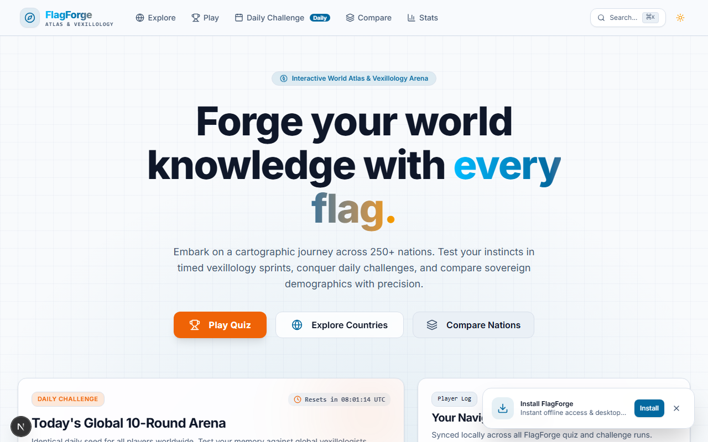
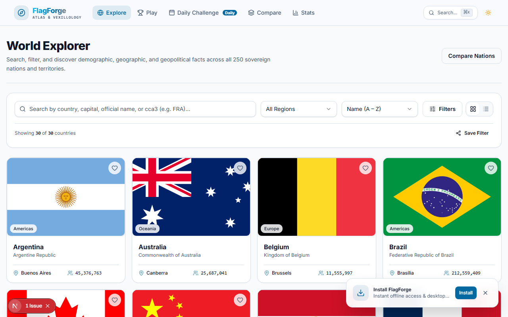
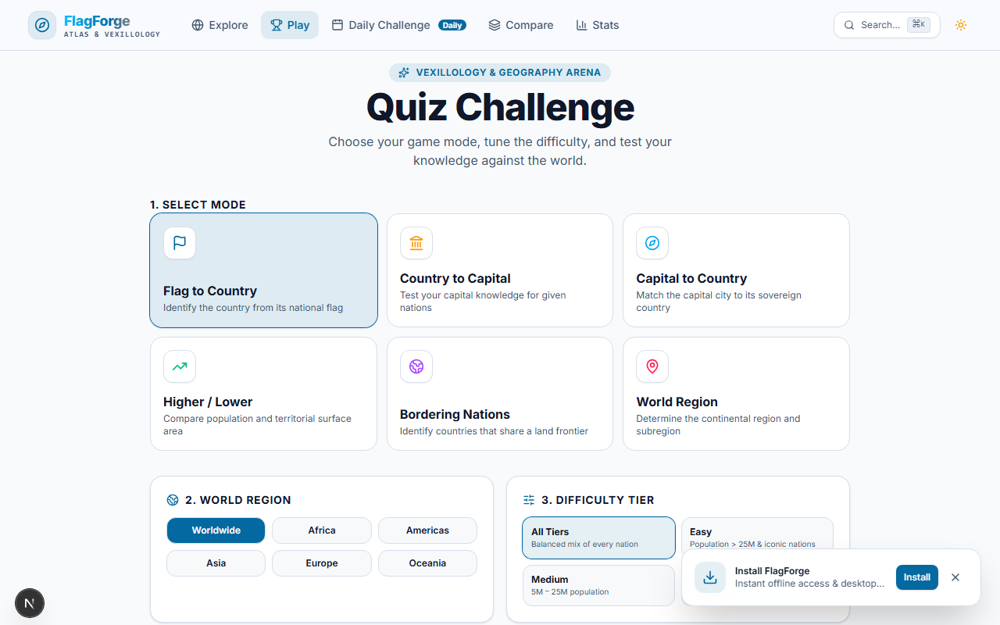
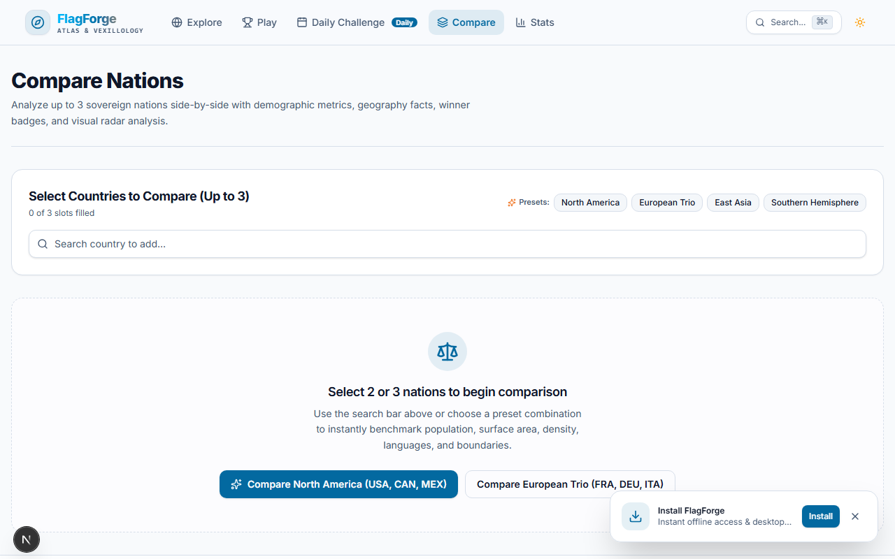
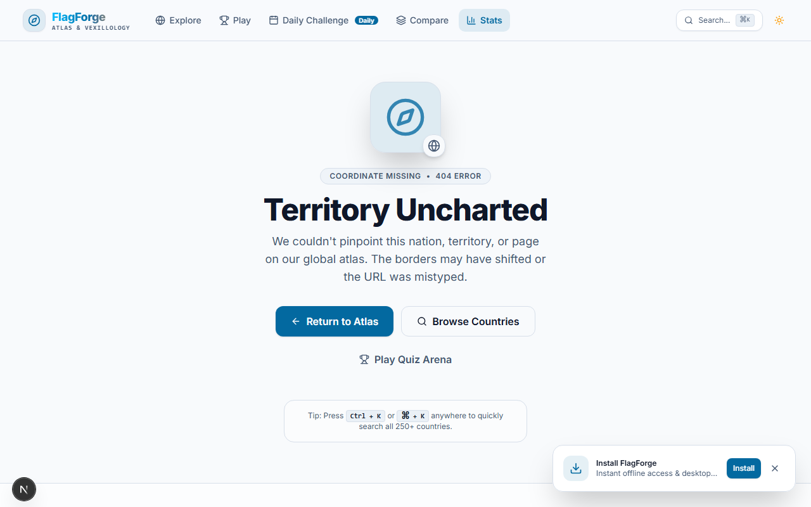
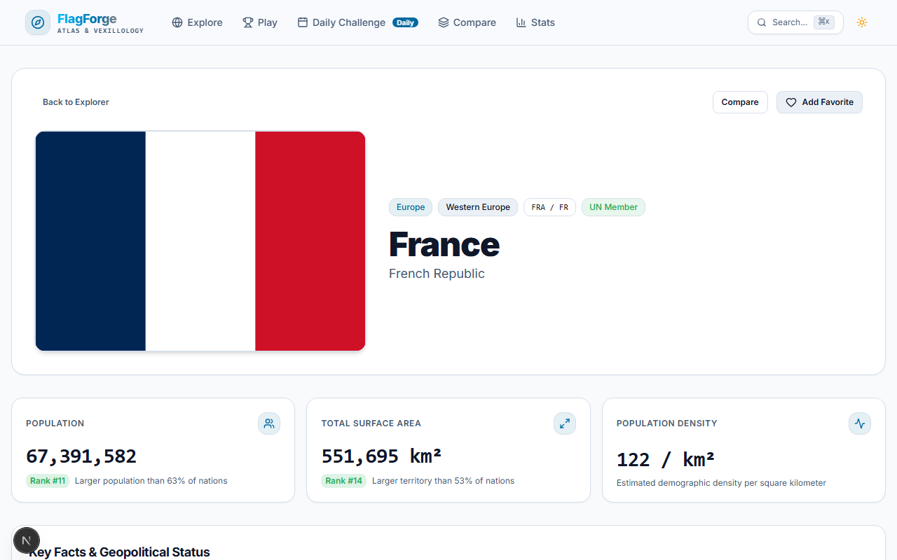
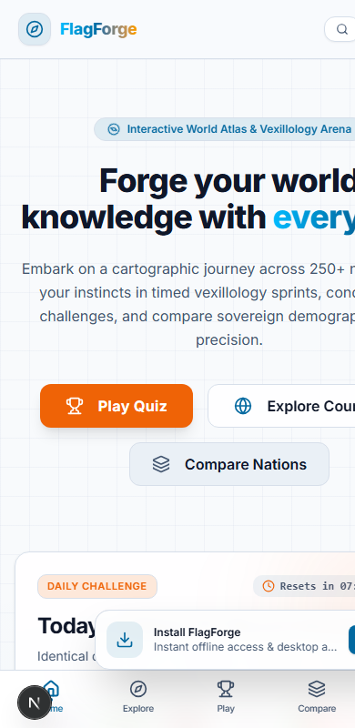

A Project Report
Submitted in partial fulfillment of the requirement for the award of the Degree of
BACHELOR OF SCIENCE (COMPUTER SCIENCE)
By
Kaushal Rajput
Under the esteemed guidance of
____________________
DEPARTMENT OF COMPUTER SCIENCE
____________________ COLLEGE
(Affiliated to ____________________ University)
2026 - 2027
This is to certify that
Kaushal Rajput
has satisfactorily completed the project report entitled
FlagForge - Interactive World Atlas & Vexillology Quiz Arena
in partial fulfilment of the requirements for the Bachelor of Science (Computer Science) during the academic year 2026 - 2027.
Date of Submission: ____________
I hereby declare that the project entitled "FlagForge - Interactive World Atlas & Vexillology Quiz Arena", submitted in partial fulfilment for the award of Bachelor of Science in Computer Science during the academic year 2026 - 2027, represents my project work. Sources and third-party services used in the implementation are acknowledged in the references.
Signature of the Student: ____________________
Place: ____________________
Date: ____________________
I would like to express my sincere gratitude to everyone who contributed to the successful creation and development of the "FlagForge" project.
I extend my deepest gratitude to the faculty members and the project guide of the Department of Computer Science for their guidance and support during the development of this project. Their insights greatly enhanced its quality.
I also thank my friends and classmates for providing feedback on the quiz, explorer and comparison experiences. Their diverse perspectives helped me refine the functionality and the user experience of the application.
Building FlagForge helped me understand how a real-world application combines external information services, a responsive user interface, typed data validation, client-side state, accessibility and software testing. It was a rewarding and insightful experience.
Finally, I thank my family for their encouragement throughout the project.
Thank you all.
Kaushal Rajput
FlagForge is a web-based interactive world atlas and geography quiz platform. It helps learners explore every country and territory in the world, practise recognising flags, capitals and borders through timed quizzes, take a shared daily challenge, and compare countries side by side using demographic data and charts.
Country data is aggregated from the REST Countries API, Wikipedia and Open-Meteo, validated with Zod schemas and normalized into one internal Country model. If the network is unavailable, an embedded dataset of 30 countries keeps the application usable. The application is a Progressive Web App: a service worker caches flags, API responses and visited pages so that previously loaded content works offline.
The application is built with Next.js 15 (App Router), React 19, TypeScript, Tailwind CSS 4, TanStack Query and Zustand. All user data (progress, streaks, achievements, favorites and settings) is stored locally in the browser with versioned persistence, so no account is required and no personal data leaves the device. A pure, seeded quiz engine generates six question types at three difficulty levels and a deterministic "Daily Challenge" that is identical for every player on the same UTC date.
The project emphasizes keyboard accessibility (WCAG 2.2 AA target), graceful handling of API failures, a strict Content-Security-Policy, and automated verification with Vitest (58 unit and component tests) and Playwright with axe-core (end-to-end and accessibility specs).
Keywords: world atlas, geography quiz, flags, Next.js, React, PWA, offline-first, Zustand, TanStack Query, accessibility.
| Aspect | Summary |
|---|---|
| Users | Students, geography enthusiasts and casual players (no account needed) |
| Platform | Responsive, installable Progressive Web App (desktop and mobile browsers) |
| Data sources | REST Countries v3.1, Wikipedia REST summary API, Open-Meteo, FlagCDN images |
| Storage | Browser localStorage (versioned Zustand stores), TanStack Query cache, service-worker caches |
| Verification | Vitest + Testing Library, Playwright, axe-core, TypeScript strict mode, ESLint |
| No. | Figure |
|---|---|
| 1 | FlagForge between the learner and three external services |
| 2 | Development process model |
| 3 | Flow of the project |
| 4 | DFD Level 0 (context diagram) |
| 5 | DFD Level 1 |
| 6 | Use case diagram |
| 7 | Class diagram |
| 8 | Activity diagram (quiz session) |
| 9 | Sequence diagram (loading countries) |
| 10 | Data model / local storage diagram (ER equivalent) |
| 11 | Component diagram |
| 12 | Gantt chart |
| 13 | Layered system architecture |
| 14 - 20 | Graphical user interface screens |
| Chapter | Title |
|---|---|
| 1 | Project Overview |
| 2 | Introduction & Motivation; 2.1 Theory Behind the Project; 2.2 Problem Definition; 2.3 Need for the Project |
| 3 | Literature Survey |
| 4 | Analysis & Design: 4.1 Process Model; 4.2 Flow of Project; 4.3 Feasibility Study; 4.4 Cost Analysis; 4.5 Data Flow Diagrams; 4.6 UML Diagrams (use case, class, activity, sequence, data model, component); 4.7 Gantt Chart; 4.8 Technologies Used; 4.9 System Architecture |
| 5 | Implementation: 5.1 Code; 5.2 Graphical User Interface; 5.3 Test Cases |
| 6 | Conclusion & Future Scope |
| 7 | References |
| 8 | Synopsis |
FlagForge is a fast, offline-capable interactive world atlas, flag and geography quiz arena, and country comparison tool. All content is presented through a single responsive interface that works on phones as well as desktops.
The scope of the system is geography learning and exploration. User accounts, multiplayer leaderboards and server-side storage are outside the scope of this project.
| Feature | Implemented in | Route |
|---|---|---|
| Atlas explorer | src/components/features/explorer; use-explorer-filter.ts | /explore |
| Quiz arena | src/lib/quiz; src/components/features/quiz | /play |
| Daily challenge | src/lib/quiz/rng.ts; DailyModal | /daily |
| Compare | src/components/features/compare | /compare |
| Statistics | src/components/features/stats; useProgressStore | /stats |
| Country profile | src/components/features/country; src/lib/api | /country/[code] |
| Design reference | src/app/design/page.tsx | /design |
Learning geography from textbooks and atlases is often passive. Learners may be able to look up a country but have little way to test themselves, track improvement, or compare nations quickly. Existing quiz sites often require registration, hide data behind advertising, or stop working without a connection.
FlagForge provides one interface for exploration, practice and comparison. It gathers country data from public APIs, offers six kinds of quiz, a shared daily challenge, a side-by-side comparison view and a personal statistics dashboard. The design emphasizes a clean, search-first interface, accessible controls and fast loading.
The system uses modern web technologies: Next.js 15 and React 19 with TypeScript for the application, Tailwind CSS 4 for styling, TanStack Query for server-state caching and Zustand for persisted client state. The same codebase renders fast pre-built pages and interactive client components.
The main motivation is practical. A learner may want a five-minute daily practice routine, may want to revise only a single region, or may want to know how two countries differ. Filters, difficulty levels and persistent progress support these needs, while streaks and achievements encourage regular practice.
Another motivation is low friction. No account is needed; progress is stored on the device. Because the app is installable and caches data, it remains useful on slow or unreliable connections.
Finally, building FlagForge is a realistic software-engineering exercise: it combines external APIs, schema validation, state management, offline caching, accessibility and automated testing in one project.
FlagForge is based on the principles of modern web application architecture, schema-validated data aggregation, deterministic pseudo-random generation, offline-first caching and accessible interface design.
The Next.js App Router organizes pages; React renders interactive elements; TypeScript's strict typing catches incorrect data shapes before deployment. Pages such as country profiles are pre-rendered statically for speed.
The REST Countries API limits requests to 10 fields, so data is fetched in two parallel batches (identity and demographics; geography and borders). Each response is validated by a Zod schema and then merged by normalizeCountry() into one Country model used everywhere in the UI.
The daily challenge must be identical for all players. The date string (for example 2026-10-24) is converted to a 32-bit integer seed, and a Mulberry32 pseudo-random number generator drives a Fisher-Yates shuffle and question selection. The same seed always produces the same quiz, without any server.
Points for a correct answer are (100 + remaining seconds x 10) x multiplier. The multiplier rises with consecutive correct answers: 1.0x, 1.5x, 2.0x, 2.5x and a cap of 3.0x from a streak of five. A wrong answer scores zero and resets the streak.
A service worker applies a strategy per resource type: cache-first for flag images, stale-while-revalidate for API data and network-first with cache fallback for pages. TanStack Query keeps fetched data fresh for 24 hours in memory.
External services can be slow or fail. Every request has a timeout, failed requests are retried with exponential backoff, results are cached, and an embedded dataset provides a last-resort fallback.
Country information is spread across many websites, and most learning tools either test or inform but rarely both. Learners who want to practise flags, capitals and borders, track their progress and compare countries must switch between several sites, many of which need an account or a constant connection.
External APIs also behave unpredictably: they return inconsistent fields, impose request limits and sometimes fail. A simple client that calls them directly would show errors or empty pages whenever one service has a problem.
The main problem this project addresses is: to provide one coherent, accessible, offline-capable application that lets learners explore, practise and compare world geography while keeping their progress private on their own device.
To be successful, the solution must:
| Difficulty | Design response | Where |
|---|---|---|
| Data split across services | Typed API clients, Zod validation, one Country model | src/lib/api |
| Inconsistent or failing APIs | Timeout, retry with backoff, cache, embedded fallback | restcountries.ts, fallback-countries.ts |
| Same quiz for everyone each day | Seeded PRNG from UTC date | quiz/rng.ts |
| Progress lost between visits | Persisted Zustand stores with versions | src/store |
| No connection | Service worker and offline page | public/sw.js |
| Hard to use without a mouse | Keyboard shortcuts, skip link, focus rings, axe tests | e2e/accessibility.spec.ts |
Students increasingly learn on mobile devices and expect fast, clear navigation. A browser-based atlas and quiz needs no installation and replaces printed atlases for quick revision.
Active learning. Retrieval practice, such as answering questions under mild time pressure, improves memory more than re-reading. Timed quizzes, streaks and the daily challenge make such practice a routine.
Targeted revision. Difficulty levels and the weakest-countries list let the learner concentrate on what they miss most.
Comparison. Seeing population, area, languages and currencies of up to three countries together makes differences obvious.
Privacy and optional accounts. Progress, favorites and settings are stored only in the browser; no registration or tracking is required.
Accessibility. Full keyboard operation, skip links, high-contrast and reduced-motion settings allow more learners to use the application.
| User group | What it gains |
|---|---|
| Student | Revision tool, daily practice, progress tracking |
| Teacher | Classroom-friendly daily challenge; identical questions for everyone |
| Casual player | Quick games, achievements and country facts |
| Maintainer | Small, typed modules with unit tests |
Geography learning applications commonly combine country reference data, quiz mechanics and progress tracking. FlagForge builds on three public services, each with a distinct role.
REST Countries (v3.1) supplies structured data for sovereign states and territories: names, ISO codes, capitals, region and subregion, population, area, languages, currencies, borders, coordinates and flag image links. It is the primary data source.
Wikipedia REST API provides short article summaries, thumbnails and canonical links, used to enrich country profile pages.
Open-Meteo is a free weather forecast API that requires no key. FlagForge requests current conditions at a capital city's coordinates and translates the WMO weather code into a readable label.
A central challenge in aggregating public APIs is that responses differ in shape, may omit fields and can fail independently. FlagForge answers this with schema validation (Zod), normalization into one type, retries with exponential backoff, caching and an embedded dataset.
Gamification research suggests that streaks, short feedback loops and visible progress encourage regular practice. FlagForge applies streak multipliers, speed bonuses, achievements and a calendar heatmap. Interface design follows the Web Content Accessibility Guidelines (WCAG 2.2) and is checked with the axe-core engine.
| Service | Main role | Data used | Module |
|---|---|---|---|
| REST Countries | Country reference data | Names, codes, capitals, borders, population, area, languages, currencies, flags | restcountries.ts |
| Wikipedia | Descriptive extract | Summary text, thumbnail, page URL | wikipedia.ts |
| Open-Meteo | Capital weather | Temperature, wind, WMO weather code, day/night | weather.ts |
| FlagCDN | Flag images | PNG/SVG flags (cached by service worker) | FlagImage component |
The analysis phase identifies the learners who use the system, the problems they face, and the functional and non-functional requirements.
Functional analysis. The system must provide searchable and filterable country exploration; six quiz modes with difficulty, timer, scoring and review; a daily challenge; a three-country comparison; a statistics dashboard; and country profile pages with weather and encyclopedia content.
Non-functional analysis. The system must be responsive, keyboard accessible, privacy-preserving, installable and resilient to unavailable external APIs. It must communicate errors instead of silently hiding them.
Requirement gathering. Requirements follow learner journeys, such as finding a country, practising for five minutes, comparing two nations, and checking progress over a week.
System architecture. A modular, layered web architecture. Route files, API clients, the quiz engine, hooks, persisted stores and presentational components are kept in separate folders, which supports testing and maintainability.
Data design. No server database is used. Country data is fetched and cached; the user's progress, favorites and settings live in three versioned localStorage stores.
User interface design. A hero page with direct actions, a sticky navigation bar with command palette, a mobile tab bar, card and list layouts, light, dark and high-contrast themes.
Security and validation design. A strict Content-Security-Policy, X-Frame-Options: DENY, X-Content-Type-Options: nosniff, Zod validation of all external data and no storage of personal information.
| ID | Requirement | Type |
|---|---|---|
| R1 | Search and filter all countries by name, capital, region, population | Functional |
| R2 | Play quizzes with six modes, three difficulty levels, scoring and review | Functional |
| R3 | Provide a deterministic daily challenge | Functional |
| R4 | Compare up to three countries with charts | Functional |
| R5 | Persist progress, favorites and settings locally | Functional |
| R6 | Survive slow, failing or absent network | Non-functional |
| R7 | Be accessible by keyboard and meet WCAG 2.2 AA | Non-functional |
| R8 | Protect users with strict security headers and local-only data | Non-functional |
The project follows a phased software-development process in which each phase feeds the next and findings flow back when needed.
| Phase | Main output | Checked by |
|---|---|---|
| Requirement analysis | Journeys, requirement list | Review |
| System design | Types, diagrams, store schemas | Design walkthrough |
| Implementation | Next.js modules | tsc (strict), ESLint |
| Testing | Unit, browser and a11y tests | Vitest, Playwright, axe-core |
| Deployment | Production build, CI workflow | next build, GitHub Actions |
The flow follows the learner's journey. On the home page the learner picks Play Quiz, Explore Countries or Compare Nations. The data layer loads countries (cached for 24 hours in memory and by the service worker). In the explorer the learner filters and opens a country profile; in the arena the learner picks a mode and difficulty, answers questions and sees a review; results update the persisted progress store, which feeds the stats dashboard and achievements.
Quiz path: configure mode, difficulty, number of questions and timer; the engine builds the questions; each answer is scored; the game-over screen shows the review; the progress store records answers, game end and streak.
Daily path: the UTC date becomes the seed; ten flag questions are generated; one result per day is recorded and can be shared as an emoji grid.
Offline path: if the network fails, cached responses or the embedded 30-country dataset are used, and visited pages open from the service-worker cache, with /offline.html as a last resort.
Technical feasibility. The application relies on well-documented technologies (Next.js, React, TypeScript, Tailwind CSS) and keyless public APIs. It runs in any modern browser. API limits and availability are the main constraints and are handled by timeouts, retries, caching and fallback data.
Economic feasibility. All development tools and packages are free and open source. A static or small Node deployment fits free hosting tiers. No database or paid API key is needed.
Operational feasibility. Learners can use the application immediately without registering. The interface is responsive and keyboard accessible.
Schedule feasibility. Modules (data layer, quiz engine, explorer, compare, stats) can be built and tested incrementally.
| Risk | Effect | Response in the design |
|---|---|---|
| API downtime | Missing data | Retry with backoff; embedded 30-country fallback |
| Changed API shape | Runtime errors | Zod validation at the boundary; typed AppError |
| Slow network | Poor experience | Timeouts, caches, skeleton loaders |
| Browser storage cleared | Progress lost | Documented; versioned stores with safe defaults |
| Accessibility regressions | Excluded users | axe-core checks in Playwright and CI |
| Dimension | Verdict | Basis |
|---|---|---|
| Technical | Feasible | Documented frameworks and public APIs |
| Economic | Feasible | Free tools and hosting tier; no keys |
| Operational | Feasible | No account needed; responsive UI |
| Schedule | Feasible | Incremental modules over eight weeks |
The following figures are qualitative planning estimates, not actual project expenses.
| Cost item | Development | Demo deployment | Larger service |
|---|---|---|---|
| Tools (VS Code, Node.js, pnpm, packages) | No licence fees | No licence fees | No licence fees |
| Hosting | Local machine | Free tier, within limits | Paid plan as traffic grows |
| Database | Not needed | Not needed | Needed only if accounts are added |
| API requests | Free, keyless | Free, keyless | Fair-use limits; possible self-hosted mirror |
| Domain name | Not needed | Optional | Yearly fee |
| Effort | Main cost: student time for design, coding, testing and documentation | ||
Because all user data stays in the browser, the system has almost no operating cost per user. The benefits are mostly qualitative: easier revision, a regular practice routine and quick country comparisons. A formal return-on-investment calculation would require measured usage, which is not available.
| Cost driver | Why it can grow | How the design limits it |
|---|---|---|
| API requests | Every visitor loads country data | 24 h query cache, 10-minute client cache, service-worker cache |
| Hosting traffic | More page views | Static pre-rendering, immutable assets |
| Maintenance | APIs change | Isolated clients, one per service; Zod catches changes early |
| Testing effort | Many browsers and screens | Automated unit, E2E and accessibility tests |
A data flow diagram (DFD) shows how data moves between external actors, processes and data stores. The context diagram treats FlagForge as a single process.
| Data flow | Source | Destination | Content |
|---|---|---|---|
| Action | Learner | Web app | Search, filter, answers, settings |
| Pages and results | Web app | Learner | Country lists, questions, scores, charts |
| Country request | Web app | REST Countries | Two field batches |
| Summary request | Web app | Wikipedia | Article title |
| Weather request | Web app | Open-Meteo | Capital latitude and longitude |
| Data store | Holds | Lifetime |
|---|---|---|
| localStorage: flagforge-progress (v2) | Streak, accuracy, history, daily results, achievements | Until browser data is cleared |
| localStorage: flagforge-favorites (v1) | Favorite country codes | Until cleared |
| localStorage: flagforge-settings (v2) | Theme, sound, motion, units, contrast | Until cleared |
| Query cache and service-worker caches | Country, Wikipedia, weather data; flags; pages | 24 h stale time; entry limits |
At Level 1 the application is split into four processes: data loading (fetch, validate, normalize), exploration (search and filter), quiz handling (generate, score, review) and progress handling (update persisted stores).
| Process | Input | Output | Data store |
|---|---|---|---|
| 1. Load and normalize | API responses | Country[] | Query cache, SW cache |
| 2. Explore and filter | Query, filters | Filtered list | Favorites store |
| 3. Generate and score | Mode, difficulty, seed | Questions, points | None (pure functions) |
| 4. Update progress | Answers, game end | Streaks, stats, badges | Progress store |
| Situation | Reaction |
|---|---|
| Request times out (8 s countries, 6 s weather/wiki) | Up to 2 retries with exponential backoff |
| 404 or validation error | Not retried; typed AppError shown in an error state |
| Country API unreachable | Embedded 30-country dataset is used |
| Weather or Wikipedia unavailable | The card shows an error state; the rest of the page still works |
| Browser offline | Service worker serves cached pages or /offline.html |
The Unified Modeling Language (UML) provides standard diagrams for describing structure and behavior. The diagrams below are conceptual models; exact fields should be checked against the TypeScript types in src/types.
| Diagram | What it shows in FlagForge |
|---|---|
| 4.6.1 Use case | The learner's functions |
| 4.6.2 Class | Country, Question, store state types |
| 4.6.3 Activity | A quiz session from configuration to review |
| 4.6.4 Sequence | Messages while loading countries |
| 4.6.5 Data model | Persisted stores and their contents (no server database) |
| 4.6.6 Component | UI, hooks, stores, API clients and services |
The system has one principal actor, the learner, supported by external services. All functions are available without signing in.
| ID | Use case | Outcome |
|---|---|---|
| UC1 | Search and filter countries | Filtered grid or list; favorites |
| UC2 | View country profile | Facts, borders, map, weather, Wikipedia summary |
| UC3 | Play a quiz | Score, streak, review screen |
| UC4 | Take the daily challenge | Shared 10-question result; shareable grid |
| UC5 | Compare countries | Matrix and charts for up to 3 countries |
| UC6 | View stats | Heatmap, radar, weakest countries, badges |
| UC7 | Change settings | Theme, sound, motion, contrast, units |
A Country carries normalized descriptive fields. A Question references a target country and a list of options; exactly one option is correct. The progress store aggregates answers into accuracy and streak data.
Example object: a question of mode flag_to_country whose target is France has four options (France plus three distractors from the same region where possible), and exactly one option has isCorrect = true.
| Type | Attribute | Description |
|---|---|---|
| Country | cca3 / cca2 | ISO 3166-1 alpha-3 and alpha-2 codes |
| Country | region, subregion, borders | Used by filters, difficulty and border questions |
| Question | mode | flag_to_country, country_to_capital, capital_to_country, higher_lower, which_borders or map_location |
| Question | metadata | Metric (population or area) and values for higher/lower; border country codes |
| StreakData | current, best, lastActiveDate | Day streak of activity |
The primary activity begins when the learner opens the Quiz Arena. The learner chooses mode, difficulty and options; the engine generates questions; for every question the learner answers (or the timer expires), the score is calculated and feedback is shown; at the end the review is displayed and progress is saved.
The quiz can be paused with Esc; unlimited-time mode removes the timer for learners who need more time (WCAG 2.2.2).
When a view needs countries, a hook asks TanStack Query. On a cache miss the REST Countries client requests the two field batches in parallel, validates and merges them, and returns the typed result. If the request fails after retries, the embedded dataset is returned.
| No. | From to | Message |
|---|---|---|
| 1 | Hook to query cache | useCountries() requests the list |
| 2 | Cache to client | On a miss, getAllCountries() |
| 3 | Client to API | Two parallel requests with 8 s timeout and up to 2 retries |
| 4 | Client | Validate with Zod, merge, normalize |
| 5 | Client to cache | Typed Country[] (or the embedded fallback) |
| 6 | Cache to view | Render with data; stays fresh for 24 hours |
FlagForge has no server database. Its persistent entities are three versioned localStorage documents managed by Zustand's persist middleware. If the stored version is older, a migration step fills in new fields with defaults.
Entries in the progress and favorites stores refer to countries by their cca3 code, so no country data is duplicated in storage. The exact field list of the progress store is defined in src/types/store.ts.
React components call hooks; hooks read the TanStack Query cache and Zustand stores; the data layer talks to the external services. Dependencies run in one direction, which keeps the quiz engine and API clients testable without a browser.
The code base is divided into folders with clear responsibilities (counts from the repository at the time of writing).
| Folder | Files | Lines | Responsibility |
|---|---|---|---|
| src/app | 16 | 3,443 | Pages, metadata, manifest, sitemap, OG image |
| src/components | 70 | 7,210 | UI primitives, layout and feature components |
| src/lib | 17 | 3,029 | API clients, quiz engine, utilities, query client |
| src/hooks | 8 | 391 | Public hooks API |
| src/store | 4 | 487 | Persisted Zustand stores |
| src/tests | 5 | 1,345 | Vitest unit and component tests |
| e2e | 4 | 270 | Playwright specifications |
Three rules keep the structure clean: components may import hooks and libraries but never the reverse; one client per external service; one place per decision (scoring rules only in scoring.ts, difficulty only in difficulty.ts).
A Gantt chart is a bar chart used in project management to show the timeline of tasks. The proposed eight-week academic plan is shown below; it is a plan, not a verified log of actual hours.
| Weeks | Phase | Deliverable |
|---|---|---|
| 1 - 2 | Requirements and design | Requirement list, diagrams, types |
| 2 - 3 | Data layer | API clients, Zod schemas, fallback dataset |
| 3 - 4 | Quiz engine | Generators, scoring, seeded daily challenge |
| 4 - 5 | Explorer and country pages | Filters, search, profiles |
| 5 - 6 | Compare, stats and PWA | Charts, achievements, service worker |
| 6 - 7 | Testing and accessibility | Vitest, Playwright, axe-core |
| 7 - 8 | Documentation and deployment | Report, CI, production build |
Versions are taken from the project's package.json.
| Area | Technology | Usage in the project |
|---|---|---|
| Framework | Next.js 15.2 (App Router), React 19 | Routing, pre-rendering, interactive components |
| Language | TypeScript (strict) | Shared Country, Question and store types |
| Styling | Tailwind CSS 4, class-variance-authority, tailwind-merge | Responsive layout, themes, variants |
| UI primitives | Radix UI (dialog, dropdown, select, slider, tabs, tooltip, progress) | Accessible dialogs, menus and controls |
| Server state | TanStack Query 5 (+ persist client) | Fetching, caching, retries |
| Client state | Zustand 5 with persist middleware | Progress, favorites, settings |
| Validation | Zod 3 | API response schemas |
| Search | Fuse.js 7 | Fuzzy country search |
| Charts and motion | Recharts 2, Framer Motion 12, canvas-confetti, lucide-react | Compare and stats charts, transitions, effects, icons |
| Unit testing | Vitest, Testing Library, jsdom | Data layer, stores, quiz engine, explorer |
| Browser testing | Playwright, @axe-core/playwright | End-to-end and accessibility checks |
| Quality tooling | ESLint 9, Prettier, tsc, GitHub Actions, pnpm | Linting, formatting, type checking, CI |
The stack keeps the application a single TypeScript codebase: pages, data access, quiz logic and tests share one set of types.
The browser communicates with Next.js pages; typed API clients fetch and validate external data; the TanStack Query cache and persisted stores hold state; a service worker adds offline capability; feature components render the result.
| Setting | Value |
|---|---|
| Country request timeout / retries | 8 s / 2 retries with exponential backoff |
| Weather and Wikipedia timeout / retries | 6 s / 2 retries |
| In-memory client cache (countries) | 10 minutes |
| Weather cache | 15 minutes |
| TanStack Query staleTime / gcTime | 24 hours / 48 hours |
| Service worker caches | static, flags (max 300), data (max 100), pages |
| Offline dataset | 30 countries embedded |
frame-ancestors 'none' and object-src 'none'.X-Frame-Options: DENY and X-Content-Type-Options: nosniff.This is a resilience measure and not a guarantee of uninterrupted service.
FlagForge is implemented as a single Next.js project. Routes live under src/app, UI components under src/components, and logic under src/lib, src/hooks and src/store.
| Folder | Responsibility |
|---|---|
| src/app | Pages: home, explore, play, daily, compare, stats, country/[code], design; error and not-found pages; manifest, robots, sitemap, Open Graph image |
| src/components | ui (primitives), common (flag image, chips, stat card), layout (navbar, tab bar, command palette, PWA prompt), features (explorer, quiz, compare, stats, country) |
| src/lib/api | REST Countries, Wikipedia and Open-Meteo clients; embedded fallback dataset |
| src/lib/quiz | Question generators, distractors, difficulty, scoring, seeded RNG |
| src/hooks | Public hooks that combine queries and stores |
| src/store | Versioned, persisted Zustand stores |
| public | Service worker (sw.js), offline page, icons |
| src/tests, e2e | Vitest and Playwright tests |
Key design decisions. All external data is validated at the boundary and normalized once. The quiz engine consists of pure functions that take countries and a random function, so the daily challenge is reproducible and unit-testable. Scoring and difficulty rules each live in a single file. Stores are versioned so that future changes can migrate old data. A service worker is used instead of a heavy PWA plugin to keep caching rules explicit.
The listings below are taken from the repository (github.com/KAUSHALCODER123/geo-guess).
export function calculateStreakMultiplier(streak: number): number {
if (streak <= 1) return 1.0;
if (streak === 2) return 1.5;
if (streak === 3) return 2.0;
if (streak === 4) return 2.5;
return 3.0; // 5 or higher capped at 3.0x
}
export function calculateScore(input: ScoreCalculationInput): ScoreResult {
const { isCorrect, timeRemaining, streak, basePoints = 100 } = input;
if (!isCorrect) {
return { pointsEarned: 0, speedBonus: 0, multiplier: 1.0, newStreak: 0 };
}
const newStreak = streak + 1;
const multiplier = calculateStreakMultiplier(newStreak);
const remainingSeconds = Math.max(0, Math.floor(timeRemaining));
const speedBonus = remainingSeconds * 10;
const pointsEarned = Math.round((basePoints + speedBonus) * multiplier);
return { pointsEarned, speedBonus, multiplier, newStreak };
}
export function mulberry32(seed: number): () => number {
let s = seed | 0;
return function (): number {
s = (s + 0x6d2b79f5) | 0;
let t = Math.imul(s ^ (s >>> 15), 1 | s);
t = (t + Math.imul(t ^ (t >>> 7), 61 | t)) ^ t;
return ((t ^ (t >>> 14)) >>> 0) / 4294967296;
};
}
export function stringToSeed(str: string): number { // e.g. "2026-10-24"
let hash = 0;
for (let i = 0; i < str.length; i++) {
hash = (hash << 5) - hash + str.charCodeAt(i);
hash |= 0;
}
return hash;
}
export function shuffle<T>(array: readonly T[], rng: () => number = Math.random): T[] {
const result = [...array];
for (let i = result.length - 1; i > 0; i--) {
const j = Math.floor(rng() * (i + 1));
[result[i], result[j]] = [result[j], result[i]];
}
return result;
}
export function getCountryDifficulty(country: Country): "easy" | "medium" | "hard" {
if (country.population > 25_000_000 || ICONIC_CCA3.has(country.cca3)) return "easy";
if (country.population >= 5_000_000 && country.population <= 25_000_000) return "medium";
return "hard";
}
export function filterByDifficulty(countries: Country[], difficulty: Difficulty): Country[] {
if (difficulty === "all") return countries;
const filtered = countries.filter((c) => getCountryDifficulty(c) === difficulty);
// too few countries for meaningful questions: fall back to all
return filtered.length >= 4 ? filtered : countries;
}
export function createQueryClient(): QueryClient {
return new QueryClient({
defaultOptions: {
queries: {
staleTime: 24 * 60 * 60 * 1000, // 24 hours
gcTime: 48 * 60 * 60 * 1000, // 48 hours
retry: (failureCount, error) => {
if (error && typeof error === "object" && "isNotFound" in error &&
(error as { isNotFound: boolean }).isNotFound) return false; // never retry 404
return failureCount < 2;
},
refetchOnWindowFocus: false,
refetchOnReconnect: true,
},
mutations: { retry: 1 },
},
});
}
const DEFAULT_TIMEOUT_MS = 8000; const MAX_RETRIES = 2; const CACHE_TTL_MS = 10 * 60 * 1000; // 10 minutes // fetchWithRetry(): AbortController timeout, exponential backoff between attempts, // 404 and other non-retryable errors are thrown immediately as a typed AppError. // getAllCountries(): batch 1 and batch 2 are fetched in parallel, validated with Zod, // merged by cca3, and the embedded fallback dataset is returned if the network fails.
default-src 'self'; img-src 'self' blob: data: https://flagcdn.com https://upload.wikimedia.org https://commons.wikimedia.org; connect-src 'self' https://restcountries.com https://en.wikipedia.org https://api.open-meteo.com; frame-ancestors 'none'; object-src 'none'; base-uri 'self'; form-action 'self';
The following screens are captured from the running application.







| Area | Behaviour on a phone |
|---|---|
| Navigation | Bottom tab bar (MobileTabBar) and command palette |
| Explorer | Card grid collapses to one column; filters in a sheet |
| Quiz | Large touch-friendly answer buttons; keyboard shortcuts on desktop |
| Theme | System, light or dark; optional high-contrast and reduced motion |
| Install | PWA install prompt; offline page when disconnected |
The repository contains Vitest tests for the data layer, stores, quiz engine and explorer, and Playwright specifications for the main journeys and accessibility. At the time of writing, running vitest run reported 4 test files and 58 tests, all passing.
| ID | Test scenario | Expected result | Related tests |
|---|---|---|---|
| TC01 | Search countries by name or capital | Matching countries are listed | data-layer.test.ts; e2e/explorer |
| TC02 | Filter by region | Only countries of that region are shown | explore.test.tsx; e2e/explorer |
| TC03 | Toggle a favorite | The country is stored and displayed as a favorite | stores.test.ts; e2e/explorer |
| TC04 | Open a country profile | Profile page with facts and borders | e2e/explorer |
| TC05 | Generate quiz questions | Each question has 4 options, exactly one correct | quiz-engine.test.ts |
| TC06 | Score an answer | Points follow the formula; wrong answer resets streak | quiz-engine.test.ts |
| TC07 | Daily challenge determinism | The same date seed gives identical questions | quiz-engine.test.ts |
| TC08 | Play a quiz with keys 1-4 | Answers register; game-over screen appears | e2e/quiz |
| TC09 | Network failure | Embedded dataset is returned | data-layer.test.ts |
| TC10 | Compare 2 or 3 countries; remove one | Matrix and charts update | e2e/compare |
| TC11 | Progress persists | Stores restore their state | stores.test.ts |
| TC12 | Accessibility audit of main routes | No axe-core violations | e2e/accessibility |
| Test area | File | Tests |
|---|---|---|
| Data layer and API clients | src/tests/data-layer.test.ts | 14 |
| Explorer components | src/tests/explore.test.tsx | 20 |
| Quiz engine | src/tests/quiz-engine.test.ts | 15 |
| Stores | src/tests/stores.test.ts | 9 |
| Total (Vitest) | 58 | |
Commands: pnpm run typecheck, pnpm run lint, pnpm run test, pnpm run e2e and pnpm run build. The Vitest result above was observed when this report was prepared; Playwright and accessibility results were not re-run for this report.
FlagForge demonstrates how public country data, quiz mechanics and personal progress tracking can be combined into one browser-based, offline-capable application. It fulfils its central goal: a convenient, accessible interface for exploring, practising and comparing world geography, built on a modular architecture that is practical to extend and maintain.
The project illustrates practical engineering decisions:
Limitations. Progress is stored only in the current browser and is lost if site data is cleared; there is no cross-device sync or global leaderboard. The embedded offline dataset covers 30 countries, so full offline use depends on data cached earlier. The CSP currently permits inline scripts required by the framework. Data accuracy depends on third-party APIs.
| Objective | Outcome |
|---|---|
| One interface for explore, practise, compare | Explorer, six-mode quiz, compare view, stats |
| Reliable data from several services | Typed clients, Zod validation, one Country model |
| Work without a connection | Service worker, caches, embedded fallback |
| Keep progress private | Versioned localStorage stores |
| Be accessible | Keyboard shortcuts, skip link, axe-core tests |
| Verify behaviour | 58 passing Vitest tests; Playwright specs |
Lessons learned. External data must be treated as untrusted; small pure functions are easy to test and explain; accessibility is cheapest when designed in from the start.
The following enhancements are proposed extensions, not features claimed to be implemented.
| Extension | Module affected | Prerequisite |
|---|---|---|
| Accounts and sync | Stores, new backend | Authentication and database design |
| Leaderboards | Daily challenge, backend | Accounts, anti-cheat design |
| Spaced repetition | Quiz engine, progress store | Per-country history (already stored) |
| Full offline dataset | API layer, build scripts | Data licence check |
| Translations | UI, content | String extraction |
A final bibliography should add access dates. Implementation claims in this report are limited to the repository source code.
Project title: FlagForge - Interactive World Atlas & Vexillology Quiz Arena.
Purpose: To provide unified country exploration, gamified geography practice and side-by-side comparison, available offline and without registration.
Users: Students, teachers and geography enthusiasts.
Platform: Browser-based responsive Progressive Web App (desktop and mobile).
Core technologies: Next.js 15, React 19, TypeScript, Tailwind CSS 4, TanStack Query, Zustand, Zod, Recharts, REST Countries, Wikipedia and Open-Meteo APIs.
Core modules:
Outcome: An integrated, accessible and resilient geography learning application whose progress stays private on the learner's device.
| Item | Value |
|---|---|
| Routes | 8 page routes plus manifest, robots, sitemap and Open Graph image |
| Source code | About 16,400 lines of TypeScript/TSX including tests |
| Database | None (browser localStorage, 3 versioned stores) |
| Packages | 23 runtime and 22 development dependencies (package.json) |
| Automated tests | 4 Vitest files (58 tests) and 4 Playwright specs |
| Data sources | REST Countries, Wikipedia, Open-Meteo |